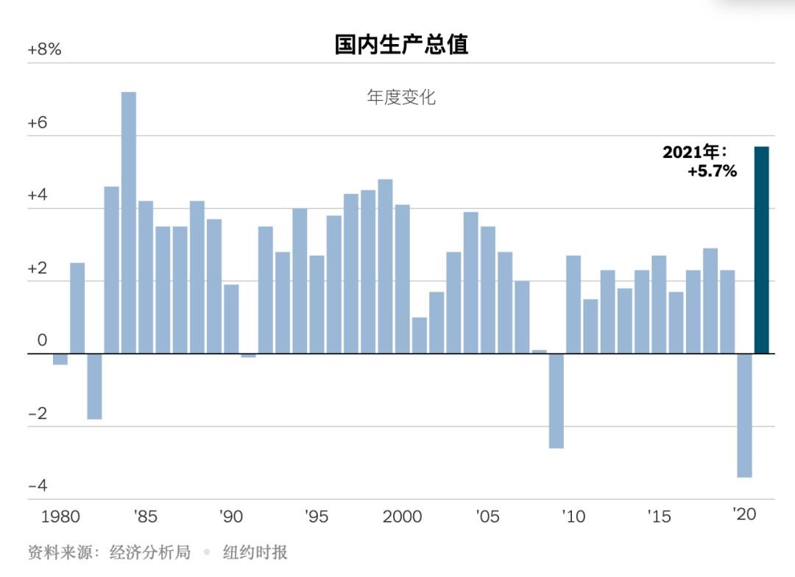
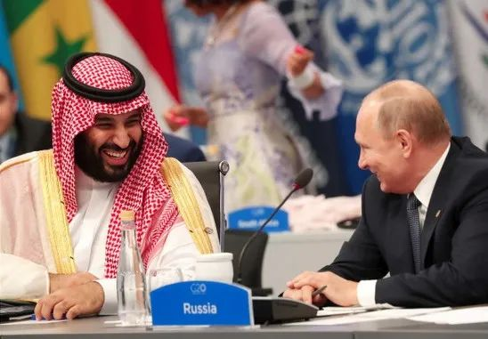
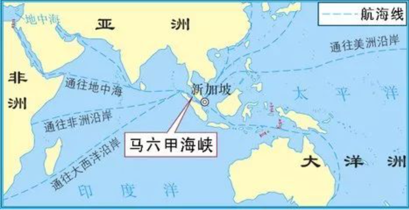
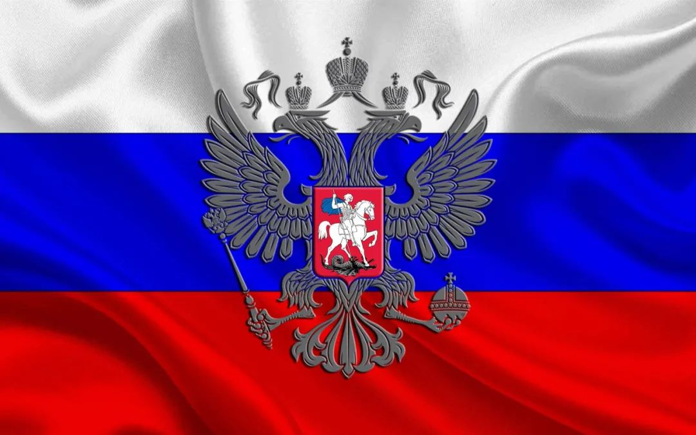

收录于合集

作者： 冯玉军，复旦大学教授，国际问题研究院副院长、俄罗斯中亚研究中心主任。
导 读
近期，著名国际关系学者阎学通在一次主题汇报中犀利指出，如今00后学生认识世界的特点已经发生了天翻地覆的变化。中国的青年，特别是生长在数字化时代的这一代人，在看待国际关系问题时，很多人往往具有强烈的优越感和自信心，并且常常以非黑即白、非敌即友的二元论视角看待世界。另外，相当一部分人深受网络观念影响，把经济决定论、阴谋论、债权武器等网红们的观点当作常识。这种现象背后折射中国虽已经实现大国崛起并承担越来越多的国际责任，然而我们认识国际关系、认识外部世界的知识范式却滞后了，既耽误学生获取知识，也影响民众理解世界。要扭转这一种局面，国际关系学者应当承担起知识和方法论更新的责任。
复旦大学国际问题研究院副院长、俄罗斯中亚研究中心主任冯玉军教授剖析了当前中国国际问题研究中常见的思维误区和“阴谋论”、“不可知论”的危害性，并指出“地缘政治决定论”、“石油峰值论”、“马六甲困局”等流行伪命题不仅不靠谱，更会妨害我们把握世界脉动甚至干扰科学决策。当代国际关系的议事日程更趋复杂、国际关系行为主体更加多元、运行方式更加复杂。我们要突破孤立、静止、片面的机械唯物论思维误区，走出非黑即白、非好即坏、非敌即友的“二元论”陷阱，以复合性思维观察世界。欧亚系统科学研究会特编发此文，供读者思考。文章原刊于《现代国际关系》2020年第5期，仅代表作者本人观点。
当今世界，正处于百年未有之大变局，国际格局、世界秩序、经济发展以及社会思潮都与以往有着极大的不同。与此同时, 中国也正加速走向国际舞台中心，其在地区和全球层面所产生的影响和引发的反应是强烈而又广泛的。这也决定了当下及未来一个时期中国崛起的地区和国际环境要远比前些年复杂，战略机遇前所未有、战略风险也前所未有。乱云飞渡之际， 如何正确地把握世界发展趋势、全方位了解竞争与合作的对象并为正确决策提供有力的智力支撑，是中国国际问题研究界的历史性重任。
但不能不遗憾地说，目前中国的国际问题研究与国家和人民的需求似乎并不相称。 曾几何时，中国的国际问题学界为西方舶来的各种“主义”、“流派”、“范式”所充斥，“言必称希腊”；近年来，一些大而空洞的概念、口号又大行其道，外国人听不懂，中国人不明白。中国国际问题研究的诸多乱象在很大程度上是方法论缺失、错误导致的。因此，要整体性地提升中国国际问题研究的水平并使之切实服务于中华民族伟大复兴的事业，就必须从改进国际问题的研究方法入手。
01
走出思维误区
大千世界的变化是快速、复杂、深刻的，而人类的认知过程与思维方式受到诸多因素的限制，因此人类对客观世界的认知永远是一个不断趋近于真理的动态过程。在此过程中，如何突破狭隘、僵化、陈旧思维方式的束缚，更全面、准确地把握世界变化的脉动，是从事国际问题研究、也是做出正确战略决策的重要前提。
把握世界脉动，要突破僵化教条的思维误区，避免刻舟求剑，力求明察秋毫、见微知著。世界发展唯一不变的规律就是“变”，世界时刻在变，常变常新，人类认知相对于世界变化总是具有一定的滞后性。然而，风起于青萍之末，任何重大的战略变化都会有初始的细微征兆。要突破思维惯性和滞后性，增强研究的敏感性与洞察力。
2008年国际金融危机以来，人们看到了美国在金融危机中所受到的重创，看到了美国的政治极化和社会分化，看到了前所未有的“特朗普现象”和美国“退群”，据此得出了“美国加速衰落”的结论。 但很多人没有关注或者有意忽略了另外的重要信息——美国在受到重创之后，正在逐渐进行自我修复。美国经济在经历了2008年的小幅衰退后，从2009年就开始了长达十年且年均增速接近3%的增长，这对于世界第一大经济体而言是相当不俗的表现。

▲ 据外媒，在强有力的经济刺激政策下，美国2021年度GDP增速达5.7%，是自1984年后的最大增幅。图源：纽约时报
更为重要的是，美国还在对世界未来发展具有重大影响的新能源、新工业和新军事革命当中占据潮头。 在能源领域，“页岩革命”使美国已经超越沙特和俄罗斯成为世界第一大油气生产国，不仅在一定程度上实现了“能源独立”，而且正积极谋求扩大油气出口，其对国际油气市场和世界能源地缘政治带来的冲击是历史性的；在工业与技术领域，奥巴马执政时期推行的一系列产业政策改革以及特朗普上台后推行的减税等政策促使国际资本和高端制造业向美国回流，美国所拥有的科技与工业制造业优势依然巨大；在军事领域，尽管美国战略界不断渲染中俄军力扩展对其构成的挑战，但美国在核武器现代化、反导防御、高超音速武器、网络战、人工智能军事化等重要领域依然占据潮头，7000多亿美元的军费开支更是令任何对手都无法与其比肩。
这一切都意味着， 尽管美国国内政治分野加剧、两党政治斗争激烈，但美国的综合国力并未实质性衰减，断言“美国衰落”似乎为时过早。未来一个时期，我们可能看到美国综合国力一定程度的反弹，也可以预见到美国霸权行为在“美国第一”的旗号之下强势回归，预见到美国对外行为的更加咄咄逼人。
更为重要的是， 在评判国家实力的时候，我们早就应该从方法论上反思和超越过于简单、粗放的总指标——如国内生产总值、军事支出和国家能力综合指标 （CINC） ——模式了。因为这些指数在一定程度上只能测量国家拥有的资源规模，而忽略了国家的成本和资源利用效率问题，这自然会导致夸大人口大国的实力水平。
美国塔夫茨大学政治系助理教授、哈佛大学肯尼迪政府学院贝尔弗科学与国际事务中心研究员迈克尔·贝克利（Michael Beckley）认为， 国家实力是减去成本之后的净资源。这里的成本可以包括生产成本、福利成本和安全成本。 生产成本指国家为了获得经济和军事产出必须投入的资源，经济上包括消耗的原材料和产生的污染等，军事上指为了训练军队和研发先进军事装备而付出的成本；福利成本指国家用于维持人们生活的成本，如食物、医疗、社会保障和教育；安全成本指政府为了维护政权、打击犯罪和对外防御而支付的成本。
显然，生产、福利和安全成本都消耗了大量资源，衡量国家实力必须去掉这些成本。因此，他提出了应该使用净指标即“GDP×人均GDP指标”。GDP可以体现国家经济和军事产出的总规模，而人均GDP则反映了经济和军事的效率，将二者综合起来便可以囊括净资源的规模和利用效率这两个重要维度，从而可以更加准确地测量国家实力。
迈克尔·贝克利通过三种方法对比国际政治中总资源和净资源的区别：一是对大国竞争案例进行检验。选取案例的标准是两个大国长期竞争，且一国在总资源上占优势，另一国在净资源上占优势；二是使用大量数据来评估上述指标（GDP、CINC、GDP×人均GDP）在预测国际冲突和战争结果时的准确性；三是用三种衡量指标复制了部分现有的国际关系模型，分别测算三种指标的样本内适合度。结果表明，GDP×人均GDP的指标适合度和解释能力远高于GDP和CINC指标。
世界变化的本身异常复杂，更何况今日为达成特定目的而展开的信息战、宣传战、心理战以及混合战此起彼伏，各种障眼法、迷魂阵不一而足，经常导致“眼见并非为实”。因此，把握世界脉动，要突破简单化的思维误区，避免人云亦云，力求去粗取精、去伪存真、由此及彼、由表及里。 一段时间以来，有关美元国际地位的问题引起了广泛的讨论，一些专家对美元资产在俄罗斯国际储备中的份额急剧下降,黄金、欧元和人民币所占份额相应上升的现象做出了过于政治化的解读，他们认为这是世界“去美元化”的又一证明，表明了美元的国际地位在进一步衰落。但如果对比美国和俄罗斯两国的金融实力以及近年来双方的金融博弈，特别是考察美元在全球外汇储备、外汇交易以及国际贸易结算中的全面数据，就不能不得出截然相反的结论：这不是俄罗斯信心满满的“去美元化”，而是迫不得已的“避险措施”。 其真实的涵义在于，在受到美国强力金融制裁而且担心被踢出“环球同业银行金融电讯协会”（SWIFT）背景下，俄罗斯不得不尽量减少外汇储备中的美元资产，以防在极端情况下遭受更大损失。更何况，当时美联储的加息政策日益明朗，这意味着包括美国政府债券在内的债券价格势将缩水。在此情况下，俄罗斯压缩美元资产完全是一种理性的“经济行为”，而不是具有高度政治意味的“去美元化”。
把握世界脉动，要突破孤立、静止、片面的机械唯物论思维误区，走出非黑即白、非好即坏、非敌即友的“二元论”陷阱，以复合性思维观察世界。 在这方面，马克思主义经典作家有关国际问题的传世之作，如《路易·波拿巴的雾月十八日》、《沙皇俄国政府的对外政策》、《十八世纪外交史内幕》、《帝国主义是资本主义的最高阶段》等以高屋建瓴的战略视野、深邃的历史洞察力给我们今天的国际问题研究树立了值得认真学习的典范。
就方法论而言，他们非常重视从全局、整体和联系当中把握事物的全貌和本质。正如列宁在《帝国主义是资本主义的最高阶段》的序言里所指出的：“社会生活现象极其复杂，随时都可以找到任何数量的例子或个别的材料来证实任何一个论点”，“在社会现象领域，没有哪种方法比胡乱抽出一些个别事实和玩弄实例更普遍、更站不住脚的了。挑选任何例子是毫不费劲的，但这没有任何意义，或者有纯粹消极的意义，因为问题完全在于，每一个别情况都有其具体的历史环境。如果从事实的整体上、从它们的联系中去掌握事实，那么，事实不仅是‘顽强的东西’，而且是绝对确凿的证据。”
中国老一辈的国际关系学者在国际问题研究方法论领域也进行了有益的探索，并为我们留下了宝贵的财富。中国现代国际关系研究院的陈启达先生突出强调 ，要充分研究客观世界存在着的多维辩证关系。 这种多维辩证关系在国际问题领域中主要表现在“经济基础与上层建筑之间、阶级因素与非阶级因素之间、历史的继承性与历史的变异性之间、正面因素与反面因素之间、主要矛盾与非主要矛盾之间、宏观与微观之间、性质与数量之间、内因与外因之间、共性与特性之间”，他强调“正确的研究方法应该全面地掌握这九对关系的两个方面，而不能忽视其中任何一个方面。”这种全面考察、相互联系的方法对于破解孤立、片面、僵化的思维方式和研究方式是十分有益的。
与以复合性思维观察世界的方法相对应的实践行为，是用多元平衡手段处理外交。在国际议事日程日益复杂、多重博弈趋于紧张的现实面前，不选边站队、搞多元平衡成为绝大多数国家的务实外交选择： 在经历了克里米亚危机之后的西方制裁之后，普京实际上已经在很大程度上改变了“美国已经衰落”、“多极化已成现实”等战略认知，开始回归实用主义，一面谋求调整、改善与西方的关系，一面加速“向东转”以从中国、日本、韩国、印度获取更多实际好处；埃尔多安在重重压力面前，不得不委曲求全，一方面与俄罗斯握手言和并在叙利亚问题上相互利用，另一方面主动调整对美欧关系，避免与西方关系全面恶化；而沙特阿拉伯、哈萨克斯坦等中等强国也在纵横捭阖，以多元平衡外交获取更多实际利益。
**把握世界脉动，要走出“阴谋论”思维误区，以扎实深入的研究把握国际大势背后的真相与规律。 “阴谋论”的认识论基础是“不可知论”，反映的是其鼓噪者的懒惰和无知。**2014年国际油价断崖式下跌，不少人断言这是美国和沙特联手打压俄罗斯的地缘政治阴谋。但实际上，这是美国“页岩革命”导致的后果：随着美国非常规油气的大规模开发，国际油气市场出现了供过于求的局面，传统油气出口国沙特、俄罗斯起初为争夺市场份额竞相压价销售，继而又为避免恶性竞争而联手“限产保价”。这才有了以前无法想象的“欧佩克+”，才有了在叙利亚问题上立场相左的俄罗斯总统普京与沙特王储萨勒曼在2018年G20阿根廷峰会上击掌相庆的离奇场面。

▲2018年 11月30日，二十国集团领导人第十三次峰会在阿根廷首都布宜诺斯艾利斯举行，俄罗斯总统普京（Vladimir Putin）和沙特阿拉伯王储穆罕默德·本·萨勒曼（Mohammed Bin Salman）在会场上 热情互动，两人击掌、握手，还一起开心大笑，吸引了众多媒体的目光。 图源：路透社
“众里寻他千百度，蓦然回首，那人却在，灯火阑珊处”，这是王国维先生所谓治学之最高境界。 悬思、苦索后的顿悟，来源于走出思维误区，来源于常识、逻辑与思索。国学如此，国际问题研究亦然。
**
**
02
树立复合性思维
当今世界，最大的特征就是“变”。变的速度加快、变的幅度增强、变的方向调整、变得更加复杂而难以捉摸。但无论世界变得如何复杂，人类的理性需要理解之，国家的决策需要理解之。因此，就出现了两个相互关联的问题： 一是要清楚今天的世界究竟发生了怎样的变化；二是要调整我们的认知框架，用复合性思维来观察、理解、认知日益复杂的世界。
当代国际关系的首要变化在于议事日程更趋复杂。 与威斯特伐利亚体系、凡尔赛- 华盛顿体系、雅尔塔体系下地缘政治、大国关系主导国际关系不同，当代国际关系的内容极大丰富了，技术进步、人口增减、金融安全、气候变化、全球治理、人文互动、宗教因素、大规模传染病都成为国际关系的重要构成要素，而且这些要素本身及其相互关系都是多向度、多维度甚至是相反相成的：全球化既带来了世界经济、全球福利的普遍增长，同时也带来了不同国家、不同社群之间的贫富差距进一步拉大、利益诉求进一步分化，进而导致了全球性的保守主义和民粹主义回潮；在全球性挑战更加突出、推进各领域全球治理的必要性日益凸现之际，二战后形成的国际规制却已无法有效治理全球性难题。但与此同时，构建全球治理新规则、新机制的努力却远未达成共识，因而出现了大量的“治理真空”；全球化条件下，各国间的相互依赖毫无疑问地深化了，但这种相互依赖往往是不平衡的，收益是不对称的。 以往，人们更多强调了相互依赖和互利双赢。而当下，这种相互依赖和收益的不平衡性却成为了国际关系中矛盾、冲突甚至局部战争的重要诱因。
第二个变化在于国际关系行为主体更加多元。 冷战结束后，民族国家在国际体系中的地位与作用曾经相对下降，全球化浪潮一度高涨。但近年来，国家主义却在世界政治中重新抬头。全球物流、人物、资金流、信息流较前受阻，“国家间政治”再次回潮。与此同时，国际组织、跨国公司、宗教派别、利益集团、部族团体甚至个人等非国家行为体都在对国际事务发挥着日益重要的影响。在这种情况下，不能把国际事务再视为“小薄饼”，而是要看作“多层蛋糕”。要在多层次上来观察当代国际关系体系，国际层面、国家层面、集团层面、个人层面的诸现象都需要深入剖析。
第三个变化在于国际关系的运行方式更加复杂。 一方面，随着网络技术特别是社交媒体的广泛运用，国际信息空间既高度趋同、即时，又高度混乱、鱼龙混杂。各种“假消息”“假新闻”满天飞，“可控混乱”与“混合战争”也大行其道。另一方面，在大规模战争风险下降的同时，各种制裁战、金融战、宣传战、心理战、情报战以及多形式、新形态的地区冲突却甚嚣尘上，国际关系体系呈现出高频振荡的不稳定状态。
认识复杂世界需要复合性思维。 这种复合性思维必然不同于传统的线性思维，简单地认为世界发展只有一种可能、一种方式、一条轨道。要摆脱“牛顿力学”的思维定式，理解相对论有关“时空是统一而不可分割的整体，它们之间是此消彼长的关系”这一命题在国际关系中的流变，充分认识到 世界不是线性发展的，而是复杂的“多元多次方程”；世界是多彩多姿的，要把当代国际关系放在多棱镜而非老花镜、近视镜和有色眼镜下细心观察，唯有如此，才能看到其七色光谱和斑斓底色；世界是混沌的，不是非黑即白、不是非好既坏，不能用冷战时期的“阵营思维”来处理对外关系，“一条线、一大片”式的写意手法已经无法适应当今需要“精细化”计算的战略需求。
这种复合性思维必然是开放的体系。不仅需要从自身经验和判断出发，更要善于倾听他者的声音；不仅要关注当下，更要关注历史与未来；不能仅仅就事论事，就政治谈政治、就经济谈经济，而是要看到政治、经济、安全、文化、社会等不同要素之间的复杂关系与多频互动；不能把国内事务与国际关系相互割裂，而是要深刻认识到内外两个大局的深度互动，甚至两个大局浑然一体，难以区分。
这种复合性思维应该是由历史发展、世界比较以及中国利益三维坐标共同组成的立体化体系。 理解复杂世界，必须正确处理好理论和历史的关系。很多人拿着抽象的理论去阉割现实，而没有将当今世界放在历史长河中来考察，这是万万要不得的。我们不能完全不要理论，但在理论和历史之间，可能历史镜鉴要比抽象的理论更加重要；理解复杂世界，一定要看清人类文明发展大势，唯其如此，才能在世界体系的坐标中找准我者与他者的真正位置；更重要的一点是， 对于中国来说，任何时候都要清醒地认识到，我们理解复杂世界、处理对外事务的根本出发点是维护和扩展中国的国家利益。否则，我们的研究就可能找不到方向，甚至可能会走入歧途。在国际形势乱云飞渡的当下，实现从理想主义和浪漫主义向理性现实主义的回归，有着特别重要的意义。
**
**
03
摆脱“伪”命题
国际关系中的各种现象纵横交错，国际问题研究也经常被不同类型的“伪命题”所困扰。
作为哲学和逻辑学概念，“伪命题”有其自身的界定。与作为严谨的专业哲学术语既有联系也有区别，今天我们所说的“伪命题”通常是指不真实的命题，既指该命题不符合客观事实和科学道理，也指无法断定其真假，既非先天分析命题、也非后天综合命题的“无意义命题”。实际上，它包含了无实质意义的伪概念、不成立的伪问题和无法证实或证伪的伪陈述等多种含义。
时至今日，在国际问题研究领域仍然流传着形形色色的“伪命题”，道听途说、以讹传讹，不仅干扰学术研究、耽误学生获取知识、影响民众理解世界，甚至误导国家决策。
在诸多国际关系“伪命题”中，最不靠谱的就是一些耳熟能详的地缘政治理论了。 比如，麦金德有关“谁统治了东欧，谁就统治了欧亚大陆腹地；谁统治了欧亚大陆腹地，谁就统治了世界岛；谁统治了世界岛，谁就统治世界”的论断不仅被诸多学者所引用，甚至被一些国家作为制订对外政策的理论支撑。
大英帝国和沙皇俄国曾为争夺“世界岛”展开了惊心动魄的“大博弈”，德国地缘政治学家豪斯霍费尔也推出了控制“世界岛”计划，并被纳粹德国奉为发动侵略战争的圭臬。即使在当下，当涉及有关阿富汗、中亚、中东事务以及俄美关系问题时，也经常听到一些学者言必引这一地缘政治学说的“金科玉律”。然而，麦金德的三段论推理本身就是一个包含伪概念的巨大逻辑陷阱：究竟哪里是“世界岛”、谁能清晰确定它的范围？谁、怎样、何时可以占据“世界岛”？如何才能证实或者证伪“统治了世界岛就可以统治世界”？这一切，都是一笔糊涂账。
较之地缘政治理论的明显缺陷，石油峰值论和增长极限论由于放大了对环境问题的关注而备受推崇，但实际上，其理论假设也大有可以推敲之处。 石油峰值论源于上世纪50年代美国著名石油地质学家哈伯特发现的矿物资源“钟形曲线”规律。他认为，作为不可再生资源，任何地区的石油产量都会达到最高点，石油峰值是指某一区域（全球、地区、国家、油区等）石油产量的最大值及其来临的时间，达到峰值后该地区的石油产量将不可避免地开始下降。罗马俱乐部于1972年发布的《增长的极限》报告断言，由于石油等自然资源的供给是有限的，因而经济增长不可能无限持续下去。
这两种理论假设带有浓厚的消极悲观色彩，是“未来学悲观派”的典型代表。如果按照他们的假设，人类真的应该尽早制订“流浪地球”计划了。这两种假设的理论及社会价值在于关注了特定资源的总体有限性，并提出了通过对全球性问题的系统研究，提高公众全球意识，改善全球治理从而使人类摆脱所面临困境的必要性。但其方法论的缺陷在于“静止、孤立、封闭地研究和看待事物，对战术接替和战略接替没有进行深入的研究”，忽视了自然资源的无限可能性和人类推动技术进步的主观能动性。
实际上，一方面，技术进步使人类开发利用石油资源的可能性不断提升，近年来页岩革命所带来的世界能源市场剧变即是明证，没有人能够预测“石油峰值”何时到来；另一方面，技术进步使人类不断掌握利用非常规碳氢化合物（如可燃冰）、太阳能、风能、氢能的能力，从理论上讲，人类拥有利用自然资源的无限可能，除非海枯石烂、太阳爆炸。
多年来经常被一些战略界人士提及的“马六甲困局”实际上也是明显的“伪命题”。 这一推断认为，马六甲海峡是中国能源供应的“海上生命线”，但中国海军鞭长莫及。一旦出现意外，将给中国的能源安全造成极大威胁，“谁控制了马六甲海峡和印度洋，谁就能随时切断中国的能源命脉”。

▲ 素有“东方的直布罗陀”“远东十字路口”之称的马六甲海峡，是东亚国家与南亚、西亚及大洋洲、非洲、欧洲国家联系的海上交通枢纽，也是中国“海上丝绸之路”的咽喉。 图源：搜狐新闻
推进能源进口多元化是一项明智的决策，但如果以“马六甲困局”作为决策前提，却实在是让人啼笑皆非： 一则，如果有大国想切断中东对中国的石油供应，在波斯湾下手会更直接有效；二则，精确制导导弹破坏固定而漫长的陆上油气管道非常容易,战争时期他国可以选择任意一点动手就可以使陆上油气管线陷于瘫痪；三则，绝大多数通向中国的陆上油气管道都经过高风险地区，中国能源供应面临的非传统安全威胁不降反升；最后，如果真要发生战争，肯定将实施战时经济状态，能源供需将是另一番完全不同的场景，哪里还可以有私家车可开？
可以说，对于“马六甲困局”的担心“一定程度上是由于混淆了战时与和平时期的能源安全概念产生的。把战时能源供应与和平时期的能源安全保障放在一起谈, 就不可避免会放大能源运输和能源安全的风险与威胁。 一些中国学者诸多论述中的‘一旦有事’、‘紧急状态’和‘遏制能源咽喉’等, 多是指中国在战争或与某国敌对状态下的能源安全风险。 而实际上战时与和平时期的能源安全有着很大区别。 在发生直接涉我战争时, 能源安全实际上也演变为军事安全, 通常意义上的能源安全概念已不适用, 传统的能源安全保障手段诸如战略石油储备、能源生产与运输设施等不但已无法保障战时的能源供应, 反而会成为战时敌方主要的军事打击目标。战时能源供应的充足与否主要取决于军事实力, 如对运输线的保障能力。在诸多战争中, 表面看能源供应关系到战争结局, 实际上军事实力是胜负的最终决定因素。”
国际关系领域的“伪命题”得以存在和流传有诸多复杂的原因。一是简单的“一元化”思维，过度强调单一因素在事物发展过程中的决定性作用，从而忽视了多种因素合力的影响。石油峰值论的缺陷就在于只关注了资源的有限性而忽视了技术进步的无限性和能源利用的多样性；二是不合理地使用连串的因果关系以得出某种意欲之结论，犯了将“可能性”转化为“必然性”的逻辑错误。麦金德的“世界岛”理论和“如果你偷懒，就会令公司受损；公司受损，就要解雇员工；遭解雇的人因失去收入，就会打劫；打劫时遇到反抗，就会杀人。所以如果你偷懒，你就是杀人犯”之类的“滑坡谬误”如出一辙；三是由于某种思维定式的制约。“马六甲困局”之所以流传甚广，很大程度上是由于中国是传统陆权国家而历史上又遭受过西方国家禁运和封锁造成的。在这种情况下，“战争逻辑”常常压制了“市场逻辑”，对能源供应被切断的担忧让我们忽略了中国的庞大市场本身也是一种重要的“能源权力”，在中国需要油气进口的同时，能源生产国也迫切需要中国的能源市场份额。
大变局下，摆脱国际关系“伪命题”对于中国至关重要，只有以立体多元的视野、开放包容的胸襟看待自己、观察世界，才能真正把握世界脉动，做出正确的战略决策。
**
**
04
从实现“历史回归”
近年来，中国国际问题研究存在一种普遍的“去历史化”或者说“空心化”现象。就事论事、炒作新奇概念以及貌似高大上、实则假大空的“理论推导”贻害无穷。在日益复杂的国际大变局下，中国的国际问题研究必须将国际关系史、外交史、中国对外关系史重新纳入研究和思考的视野，实现“历史回归”。
实现国际问题研究“历史回归”，必须要树立深邃的历史观，不畏浮云遮望眼，把现实问题放在历史发展的长河中加以考察，而不能拘泥于一时一事。 当今美国的内政外交都经历着前所未有的剧变，但这些变化并非无迹可寻。从第一次世界大战后威尔逊提出“十四点计划”试图以和平主义来改造世界到受挫后退回孤立主义，再到全面卷入第二次世界大战并确定战后国际秩序，美国对全球事务的关注和影响是持续的、上升的，而不问世事、洁身自好则是相对的、短暂的。一段时间的孤芳自赏之后，往往是美国对全球事务更广泛的参与和重塑。
当下，许多人只看到特朗普加紧“退群”，因而认定美国是在搞“孤立主义”。但同时也要看到，美国正在国际经贸领域打破它曾经创立的旧秩序，并加紧建立对其更加有利的新秩序： 美加墨、美韩自由贸易协定已经签署，美日部分自贸协定也已达成，美欧正在加紧谈判，甚至不排除CPTPP（编注：全面与进步的跨太平洋伙伴关系协定）未来也被美国“收购”的可能。一个以美国为核心，以“零关税、零壁垒、零补贴”为基本原则以及在环境、劳工等领域实施更高标准的高度一体化的大市场有可能在不久的将来呼之欲出。
实现国际问题研究“历史回归”，必须全面呈现、还原历史，只有在丰富翔实的“大数据”支撑下，才能做到以史为鉴。 今天的中俄关系达到了“新时代全面战略协作伙伴关系”的新高度。要使中俄关系平稳、健康、可持续发展，就不能只讲中俄关系的战略意义和巨大成就，也要看到曾经的困难和曲折。只有全面地还原历史，才能真正地理解“不结盟、不对抗、不针对第三方、非意识形态化”四大原则对于中俄关系的重大价值，才能避免重蹈中苏关系由海誓山盟、如胶似漆很快演变为反目成仇、执刀相向的历史覆辙。
实现国际问题研究“历史回归”，要学会进行科学的历史比较。 近代以来，俄罗斯在东亚的存在和影响经历过几轮波浪式起伏。1856年克里米亚战争战败后，俄罗斯掉头东进，借中国陷入太平天国起义内乱和第二次鸦片战争之机，迫使中国签署了一系列不平等条约，从中国割占了上百万平方公里土地，真可谓“失之东隅，得之桑榆”。之后，俄罗斯与日本在中国东北和朝鲜半岛展开了激烈角逐。1895年中日甲午战争后，俄罗斯借助李鸿章“以俄制日”的想法诱使中国签署《中俄密约》，通过修筑中东铁路等一系列措施在华攫取了大量利益。在日俄战争中被日本击败后，俄罗斯的东亚战略核心目标就是引导强势日本“南下”而非“北上”。而在二战行将结束之际，苏联却利用雅尔塔协定出兵东北亚并取得了巨大利益。 可以看到，尽管历史上俄罗斯在东亚缺乏足够的实力，但却有着连贯的战略并善于借力打力以获得最大利益。当前，东亚战略格局正经历着历史性转换，俄罗斯也开始了新一轮“向东转”进程。在此过程中，俄罗斯有着怎样的战略目标、会运用怎样的策略手法？历史不会给我们全部答案，但肯定会给我们有益的启迪。

▲俄罗斯 国徽双头鹰标志意喻着俄罗斯的现实地理位置，一头看西方，一头注视着东方。图源：搜狐新闻
国际问题研究是与国际战略运筹、对外政策实践具有高度相关性的学科领域，在国际格局和世界秩序深刻演变、中国发展与外部世界高频互动的今天， 中国国际关系学界必须承担起时代的责任，始终以维护国家利益和人民利益为根本出发点，从改善研究方法入手，在由世界发展、历史比较和中国利益为坐标轴的立体空间里，开展科学性、前瞻性、针对性的理论研究、基础研究和政策研究，全立位地获取和传播真知识、实学问，提出专业化、建设性、切实管用的政策建议，着力提高综合研判和战略谋划能力，为实现两个百年梦想的伟大目标做出切实贡献。
排版 | 国小政
本文章来源于“欧亚系统科学研究会”
文章观点不代表本平台观点